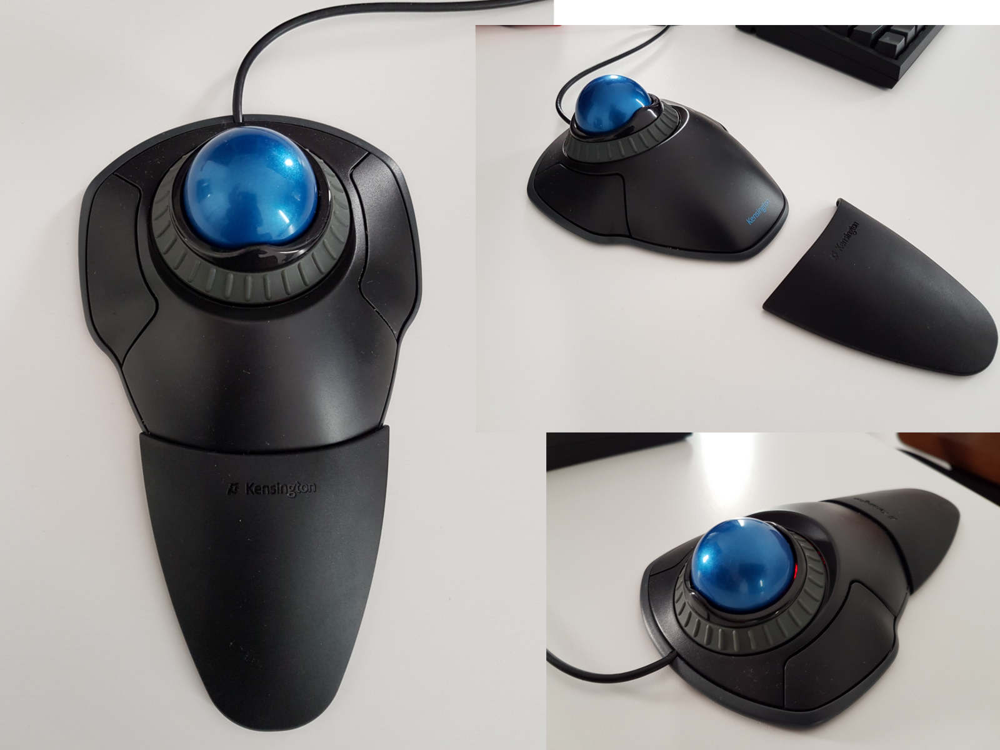
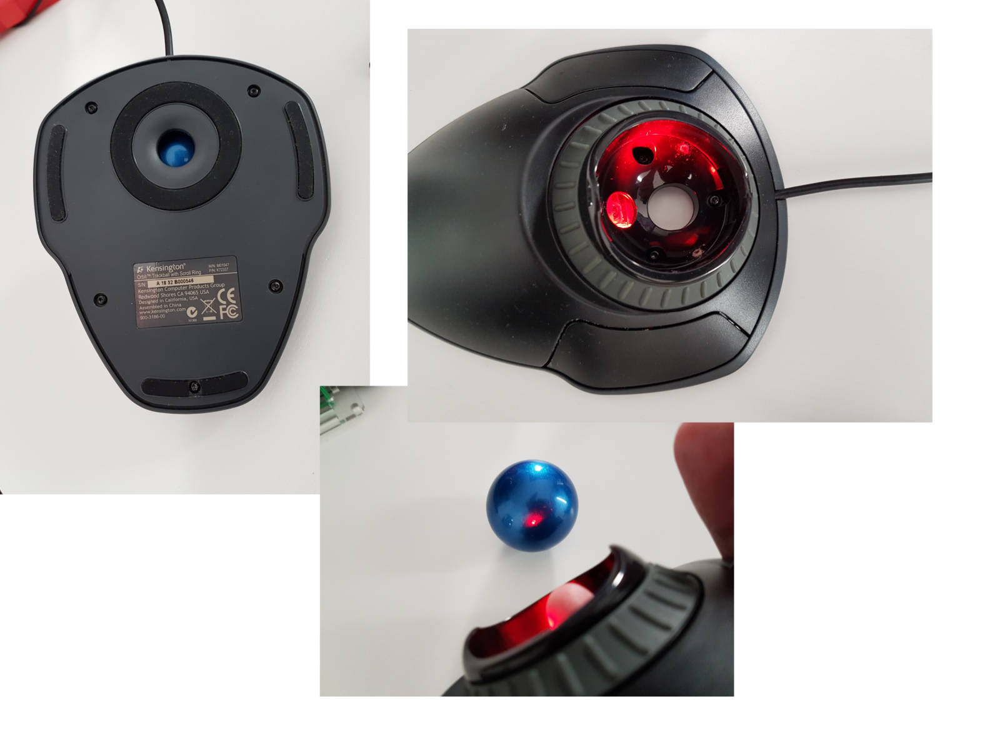
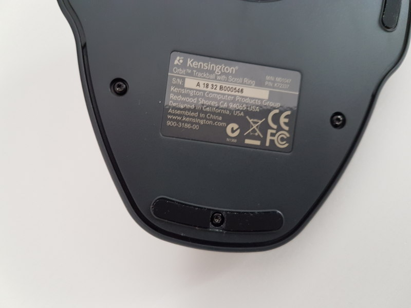

Since about three months I use Kensington Orbit Trackball as my only pointing device. This is my very first trackball, I bought it for about 180PLN.

Kensington Orbit Trackball is a “stationary device”, good for a PC or for a laptop with docking station, but not very mobile. The device by itself takes more space than a mouse, but since it does not require any movements, you end up with a huge desk space savings. In my case I ended up needing only about one third of the space that I needed for my mouse.
It took me about two weeks to get used to it. In the beginning all my movements were clumsy and my fingers got tired really quickly just from clicking right and left buttons. Yet the biggest challenge for me was the middle-click. On Kensington it is performed by pressing simultaneously left and right buttons. After a few presses like this my fingers literally hurt. Fortunately for me the pain and discomfort lasted only few days. After that my hands developed necessary muscles and using my trackball become bearable. Still I needed about two weeks more to get to the point when using my trackball was actually comfortable. When it comes to movement precision I still have troubles with selecting text fragments and drawing is definitively out of the question right now.
I use Kensington trackball only at home, at work I still use a mouse. This may explain the long time it took me to get used to it. On the other hand it may be too painful and uncomfortable to start using trackball for 8+ hours a day. So maybe starting small is not a bad strategy…
Instead of a scroll wheel Kensington offers a huge scroll ring located around the ball, which is very pleasant to use. In case of my Kensington the ring did not rotate smoothly during first few days of using it, but after that I had no problems with it.
Kensington provides drivers for Windows and macOS,
but not for Linux (shame on you Kensington).
One of the downsides of this
is that the middle click that caused me so much discomfort
does not work out of the box with Linux.
Fortunately this is
easy to fix,
just add to your ~/.profile:
xinput \
--set-prop \
--type=int \
--format=8 \
"Primax Kensington Eagle Trackball" \
"Evdev Middle Button Emulation" \
1The downside of this solution is that you must reexecute this command every time you unplug and plug your trackball again.
The other thing that surprised me is that this device requires regular cleaning. In my case about once a week. The cleaning is not too difficult, you just need to push the ball out using a pencil or your pinky finger and remove dust and dirt. You can find a lot of tutorials how to do this properly on the internet.

If you will ever want to open this trackball e.g. to do some more serious cleaning, please remember that there is a hidden screw:  I removed a piece of rubber that hid the screw using box cutter knife. It is really a shame that nowadays manufacturers use tricks like that to stop users from repairing their products.
The last thing that I want to mention is price. In my opinion this product is a bit overpriced. This is really sad considering how few people are using trackballs. I think that these devices would be much more popular if they where cheaper.
Time to sum up. All in all Kensington Orbit Trackball turned out to be a good purchase. It took me some time to get use to it, but now I like it very much and I do not plan to return to a mouse anytime soon.